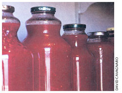

Recycling Jars And Lids
August/September 2002
Country lore
To save money on canning jars and lids, you can reuse supermarket juice jars to can tomato or other juices. These juice jar lids have a silicone liner that will reseal many times. just be sure to check the juice before you use it to be certain the recycled lid has stayed sealed. The center of the lid should be slightly depressed and make a high, tight sound when tapped.
Use lids that have metal tabs for screwing on. Some jars have threads in the silicone layer lining the lid: These quickly wear out and should not be reused.
This technique is probably not U.S. Department of Agriculture approved, but I have been using these jars for years, replacing worn lids as needed, with no problem whatsoever.
Still Splitting Wood at 69
I have enjoyed Mother Earth News for years and years. At age 69 I do not get into very large projects anymore, but I still split my own firewood. I bought the mechanical wood splitter advertised in your magazine (November 2001) and find it easy to operate and a great, cheap way to split wood rounds. I could not afford a gas wood splitter, nor do I have the strength to split wood using a maul. But this one allows me to split even knotty rounds.
The splitter is the Mean Green Splitting Machine, available from www.avalanchesnow.com (877) 251-9900. It costs $100 plus shipping. If you buy the oak base, it comes with a spring and nylon washer that make it work better. The base, however, is hard to put together just right.
JOANNA UHLER
Elk, Washington
Recycling Rejects
My recycling tip is to check out your local hazardous waste facility.
Sounds awful, doesn't it? But our facility, actually located in the next county, has an exchange room that everyone is welcome to browse (no exchange needed). People are encouraged to send unwanted paint and other chemicals to the facility rather than improperly disposing them by pouring them down the drain or behind the garage. And our facility managers wisely put anything in good condition into the exchange room.
I recently went there and picked up a gallon of paint for our shed, metal primer and rust-proof paint, a can of chalkboard paint, latex additive for grouting and a new, never-been-used can of water sealer. The number of paint cans was unbelievable, and there were many different chemical compounds from oven cleaner to fertilizers, all free for the taking.
How much better to use up rather than throw away what others don't want. It's a great money saver, too.
MAUREEN UNGER
Shawano, Wisconsin
Sweet Red Winter Peppers
We always have an abundance of just slightly blemished sweet red peppers, one of our family's favorite vegetables to cook with, winter or summer. We core and chop the peppers, spread the pieces in a single layer on a cookie sheet and then freeze them. When frozen, we seal them in a plastic resealable bag and enjoy peppers all winter long.
Fresh basil is another dung we preserve for our soups and casseroles in the winter When it is abundant, we puree it with enough oil to make a duck paste, then freeze it in ice cube trays. One cube will season a sauce, more will make a lovely pesto.
ANINELLE DURHAM
Upper Lake, California
Tackling Car Tar and Mosquito Bites
What do you do when you drive over a newly paved road and get that black goo on your car? Make a paste of baking soda and water, rub it on the spot and it will remove the tar. This mixture also removes tree sap and mildew.
When bitten by a mosquito, immediately put Secret brand deodorant on the bite to stop itching. It works.
PAULETTE BRUNNET
North Fort Myers, Florida
The Homestead Hound
In my opinion, you can't beat the beagle as a top choice for your homestead. Beagles will guard your yard and garden from those shrub-eating, lettuce-mooching, "wascally wabbits" and other critters. They have a loud and distinctive voice, making them a good choice to warn of visitors, whether friend or foe. They are clean dogs. Even though they shed, their coats are short and relatively low maintenance. Beagles are tolerant of other pets and enjoy the company of humans most of all. They are quite social animals.
Beagles are born hunters and will help you put delicious rabbit on the table. In England, they gained prominence during the days of Henry VIII. His daughter, Elizabeth I, often took beagles to the hunting field in baskets attached to the horses' saddles. Bred and developed mostly for rabbit hunting, these energetic little fireballs have proven themselves on practically every species of upland game, even pheasants.
Beagles require little care other than a good diet, plenty of fresh water, a yearly visit to the vet, occasional brushing and the companionship of their families. They crave affection and will respond with devotion.
GARY VOSHELL
Wadena, Iowa
Make a Country Living
Being self-employed in the country can make a lot of sense, since traditional jobs may be few and far between. If you are suited for this particular way of working, the joy of being able to craft your own place in the world doing something you love, is beyond words.
In 1995, my husband accepted a job in a remote area of Minnesota. We live eight miles from the closest town, population 680. I've become a freelance writer, and here are my tips for others who want to become self-employed:
Do something you excel at and have a passion for. You will need your passion and enthusiasm to maintain your momentum. Self-employment can be a lonely venture (for those in the country, possibly lonelier). You're it: There's no one to turn to when something goes wrong. On the other hand, your successes are your own.
Constantly assess yourself and your business with an honest eye. Don't overextend yourself and try to offer every service possible if you're not prepared. Word spreads fast in the country, which can work for you (marketing, word of mouth) or against you (dissatisfied customers, perceived bad service).
If you've moved from the city, learn to rethink your approach to certain aspects of running a business. Use mail order for supplies rather than running to the store. Be prepared to deal with slow phone lines or power outages if you depend on the Internet or fax. Long-distance charges for phone calls can add up quickly. Watch your expenses: Gasoline costs and mileage are higher in the country.
Lose the nine-to-five mentality , if you ever had it. You're living closer to the land now. There will be times when you will need to put homestead activities (haying, gardening, food gathering, hunting, animal care, maintenance) first. The land and the seasons do not wait. Work your business around these ties to the land, which make living in the country so great.
Think globally, if this applies to your business. Make good use of the Internet, which levels the playing field for businesses, even in remote areas. If you can, offer your product or service beyond immediate regional boundaries.
Pay off debts and become as self-sufficient as possible. This will mean different things to different households. income from self-employment can be sporadic. Be prepared and have the necessary savings in the bank. Avoid new debt. Consider other forms of preparedness-food, storage, alternate power-if this applies in your household. You want to be as independent and flexible as possible.
While I admit I was ill-prepared for the transition from city to country, I've settled in after several years and love the country life and our homestead. Self-employment and living in the country are a perfect fit, Both incorporate self-reliance. Both can be hard teachers. But for those who want it, there's not a better combination.
CATHERINE DYBIEC HOLM
Cook, Minnesota
|
 |
 |
|